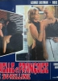

Country:Italy, 88 minutes
Spoken languages:
Genres:Adventure, Drama
Director(s):Mario Pinzauti
Writer(s):Tecla Romanelli
Video Codec:Unknown
Number: 1143


Certification:
Storyline:
An Old South plantation owner lusts after his female slaves.
Cast: 

Medium: Original DVD,
Comments: Part of: Grindhouse Experience
Loaned: No
Aspect ratio: Unknown